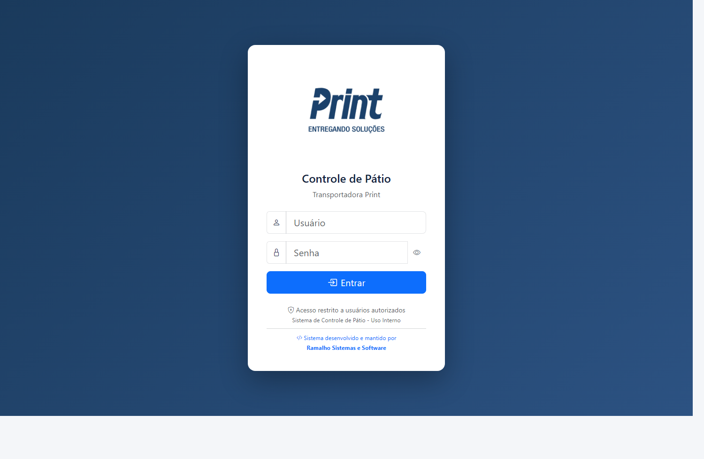
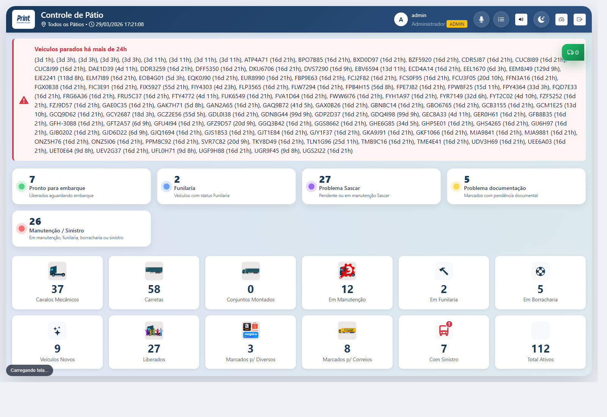
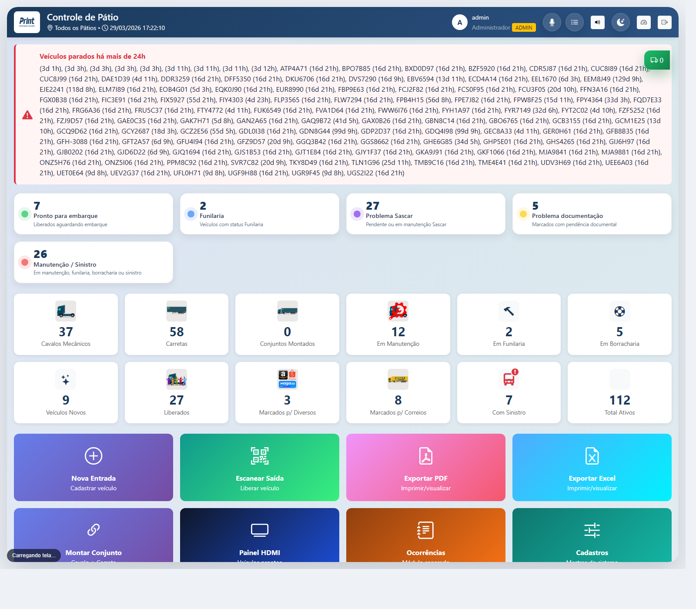
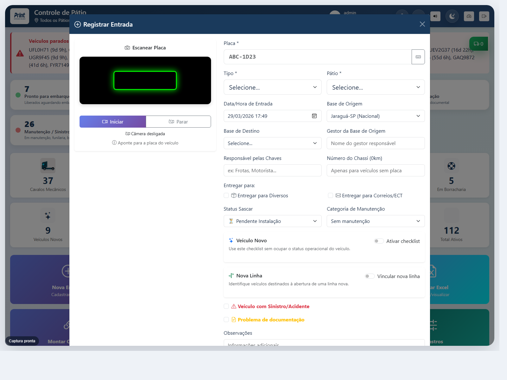
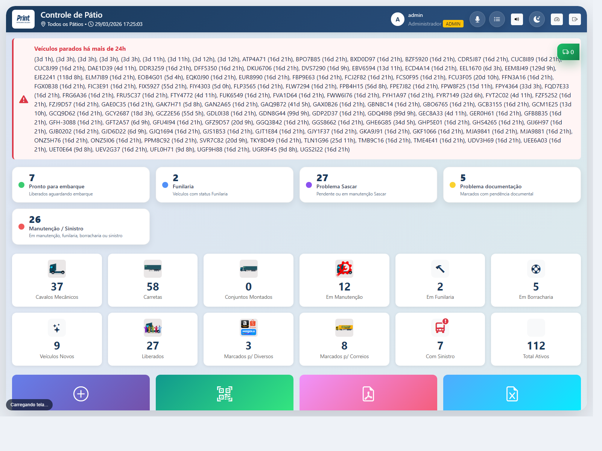
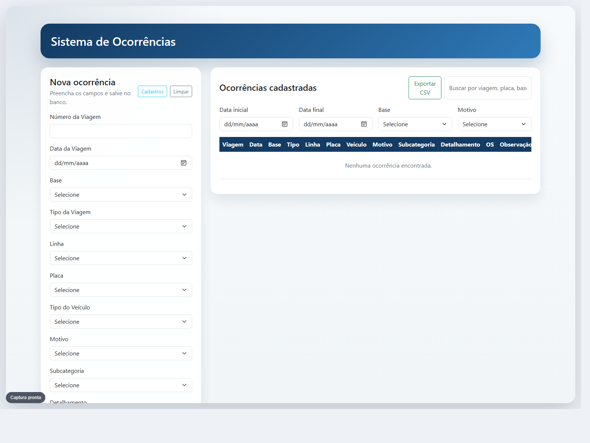
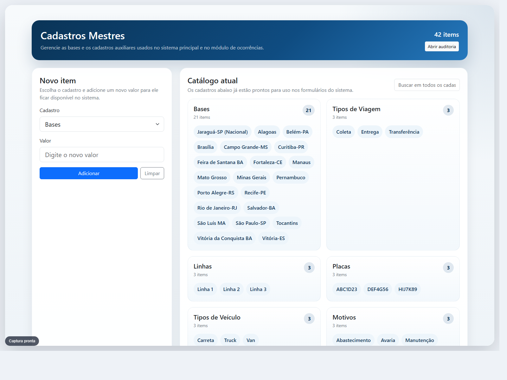
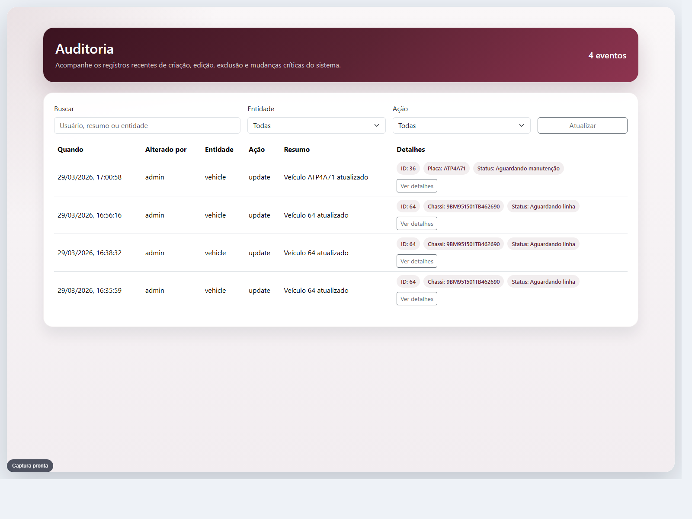

Este manual foi montado a partir da versão atual do sistema local, com imagens reais das telas e explicações objetivas do que cada área faz.
O acesso é controlado por usuário e senha. A autenticação define permissões, pátios liberados e recursos administrativos disponíveis.

1 2 3 4Esta é a tela de acompanhamento em tempo real. Ela reúne alertas críticos, indicadores operacionais e totais consolidados do pátio.

1 2 3 4Na parte operacional da home ficam os cards mais usados do dia a dia, concentrando entrada, saída, exportações e acesso aos módulos auxiliares.

1 2 3 4 5O modal de entrada concentra identificação do veículo, localização, informações operacionais e status iniciais.

1 2 3 4 5Este fluxo documenta substituições operacionais, registra placas de entrada e saída e pode marcar entrega quando necessário.
O sistema possui uma camada de navegação por voz. Ela foi pensada para abrir telas, aplicar filtros e apoiar a operação sem exigir digitação o tempo todo.

1 2 3 4O módulo de ocorrências registra eventos administrativos e operacionais vinculados a viagem, placa, base, motivo e observações.

1 2 3Essa tela centraliza bases e listas auxiliares usadas nos formulários do sistema principal e no módulo de ocorrências.

1 2 3A auditoria registra quem alterou, quando alterou e qual entidade foi impactada, permitindo consulta rápida de movimentos recentes.

1 2 3Para o uso diário, o sistema pode ser visto em três blocos: monitoramento da home, execução das ações principais e apoio por módulos auxiliares.